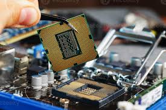

Vision Lab · Console interactive
VISION LAB.
Une démonstration vivante du travail d'Atanda Abdullahi : distillation de Vision Transformers, segmentation temps réel, inférence sur l'edge (Nvidia Jetson Orin Nano) et robotique ROS. Tout tourne localement, dans votre navigateur.
- Modèle
- ViT-distilled
- Détection
- +25 %
- Inférence Jetson
- −40 %
- Cible edge
- Orin Nano 8 Go
Console 01 · Champ de points
Nuage de points neuronal
Représentation 3D temps réel — une métaphore des nuages de points exploités en perception robotique et segmentation 3D.

Console 02 · Détection
Boîtes englobantes en temps réel
Cette surcouche simule un pipeline de détection : boîtes englobantes, scores de confiance et balayage de scan, rendus directement sur l'image. Elle illustre le travail mené chez WASORIA — distillation de connaissances de ViT lourds vers des modèles compacts, pour +25 % de vitesse de détection et de précision de segmentation.
- Tête de détection — boîtes + confiance par objet
- Segmentation temps réel — masques compressés
- Optimisation edge — TensorRT sur Jetson Orin Nano
Démo simulée à des fins d'illustration : les boîtes sont générées côté navigateur, sans envoyer de données vers un serveur.
Console 03 · Webcam
Inférence sur votre flux caméra
Activez votre webcam pour superposer une détection temps réel sur votre propre flux vidéo — exactement le type de traitement déployé sur l'edge en robotique.
Le navigateur demandera l'autorisation d'accès à la caméra. Tout s'exécute localement : aucune image n'est enregistrée ni transmise.
Stack du lab
Ce lab reflète des travaux réels : compression de ViT lourds pour l'edge (thèse M2 / WASORIA), tri des déchets par segmentation temps réel, et communication inter-robots autonome avec ROSBot Harmony. Explorer les projets.